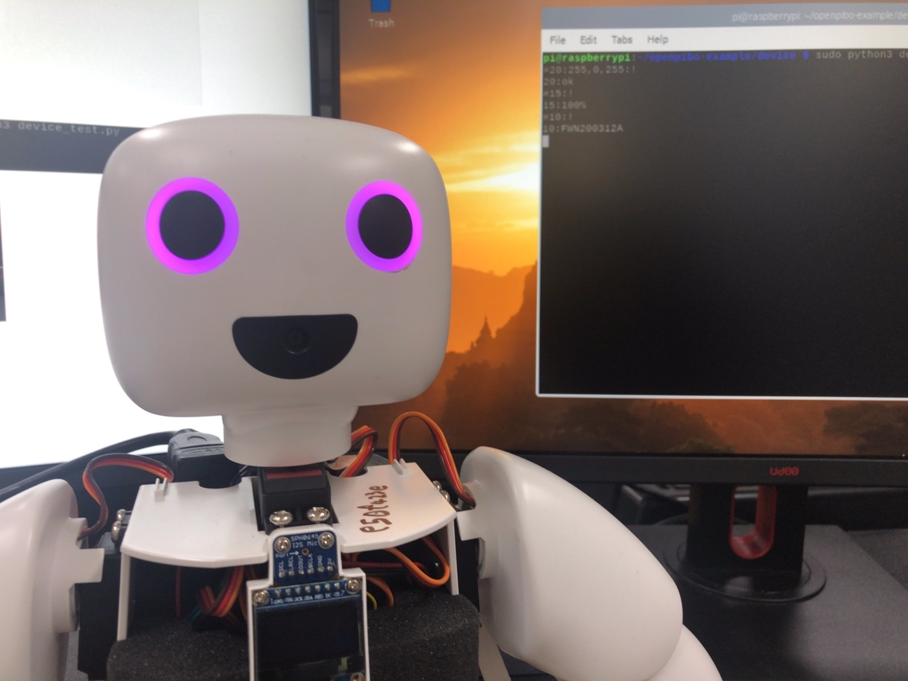
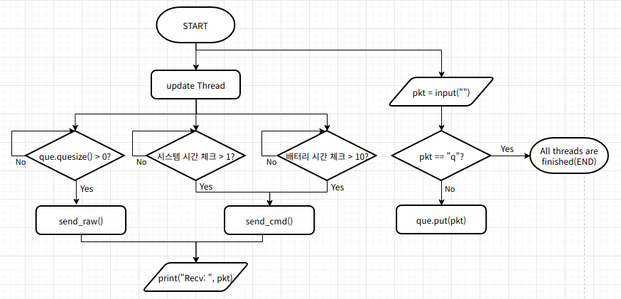

Device
device_once_test.py
인자값으로 명령어를 입력하여 파이보를 제어합니다.
from openpibo.device import Device
import argparse
def main(args):
obj = Device()
print('Send:', args.command) # 실행한 명령어 출력
data = obj.send_raw(args.command) # Device에 메시지 전송하고 응답받음
print('Receive:', data) # Device로부터 받은 응답 출력
if __name__ == "__main__":
parser = argparse.ArgumentParser() # 인자값을 받을 수 있는 인스턴스 생성
parser.add_argument('--command', help='check specific decvice', required=True) # default=0, 입력받고자 하는 인자의 조건 설정
args = parser.parse_args() # 명령창(터미널)에 주어진 인자를 파싱하여 args에 저장
main(args) # 입력받은 인자값을 인수로 main 함수 실행
device_once_test.py 실행
아래는 PIBO의 양쪽 눈 색깔을 변경(24)하는 명령어 입력 코드입니다.
pi@raspberrypi:~/openpibo-examples/device $ sudo python3 device_once_test.py --command "#24:255,0,0,0,0,255:!"
device_once_test.py 결과
Send: #24:255,0,0,0,0,255:!
Receive: 24:oK
device_test.py
명령어를 입력하여 파이보를 제어합니다.
from openpibo.device import Device
if __name__ == "__main__":
obj = Device()
data = obj.send_cmd(obj.code['PIR'], "on")
# q를 입력할 때까지 계속해서 명령어 입력 가능
while True:
pkt = input("")
if pkt == 'q':
break
ret = obj.send_raw(pkt)
print(ret)
device_test.py 실행
pi@raspberrypi:~/openpibo-examples/device $ sudo python3 device_test.py
device_test.py 결과
아래는 PIBO의 눈 색깔을 변경(20), 배터리 체크(15), 버전 확인(10) 명령어를 입력했을 때의 결과입니다.
#20:255,0,255:!
20:ok
#15:!
15:100%
#10:!
10:FWN200312A
q

device_test_with_thread.py
thread를 사용하여 코드를 병렬 수행합니다.
파이썬은 기본적으로 Single Thread에서 순차적으로 코드를 실행합니다.
따라서, 코드 실행 중 Blocking Function(ex. input)을 만나면 그 함수의 실행이 끝날 때까지 대기합니다.
이때 threading 모듈을 이용한 multi thread를 사용하면 코드의 병렬 실행이 가능합니다.
thread: 프로세스 내에서 실제로 작업을 수행하는 주체, 프로그램(프로세스) 실행 단위
daemon thread
메인 스레드가 종료될 때 자신의 실행 상태와 상관없이 종료되는 서브 스레드
daemon 속성을 True로 변경하여 사용 (default: False)
start()가 호출되기 전에 설정
from openpibo.device import Device
import time
from threading import Thread, Lock
from queue import Queue
obj = Device()
que = Queue()
def decode_pkt(pkt):
print("Recv:", pkt)
def update():
# 현재 timestamp 얻기
system_check_time = time.time()
battery_check_time = time.time()
while True:
# que에 pkt가 존재하면 pkt를 제거하고 반환하여 Device에 메시지 전송 & decode_pkt 실행
if que.qsize() > 0:
data = obj.send_raw(que.get())
decode_pkt(data)
if time.time() - system_check_time > 1: # 시스템 메시지 1초 간격 전송
data = obj.send_cmd(obj.code['SYSTEM'])
decode_pkt(data)
system_check_time = time.time()
if time.time() - battery_check_time > 10: # 배터리 메시지 10초 간격 전송
data = obj.send_cmd(obj.code['BATTERY'])
decode_pkt(data)
battery_check_time = time.time()
time.sleep(0.01)
if __name__ == "__main__":
obj.send_cmd(obj.code['PIR'], "on")
t = Thread(target=update, args=())
t.daemon = True # main thread 종료시 update 메서드 종료
t.start() # update 메서드 실행
# main thread
# 사용자가 q를 입력할 때까지 무한 반복, que에 pkt 삽입
while True:
pkt = input("")
if pkt == 'q':
break
que.put(pkt)

device_test_with_thread.py 실행
pi@raspberrypi:~/openpibo-examples/device $ sudo python3 device_test_with_thread.py
device_test_with_thread.py 결과
Recv: 40:-----
Recv: 40:-----
Recv: 40:-----
Recv: 40:person-----
Recv: 40:person-----
Recv: 40:person-----
Recv: 40:person-----
Recv: 40:person-----
Recv: 40:person-----
Recv: 15:100%
Recv: 40:person-----
Recv: 40:nobody-----
Recv: 40:-----
Recv: 40:-----
Recv: 40:-----
Recv: 40:-----
Recv: 40:-----
Recv: 40:person-----
Recv: 40:person-----
Recv: 40:person-----
Recv: 15:100%
Recv: 40:person-----
Recv: 40:person-----
Recv: 40:person-----
q
1초마다 PIR Sensor의 값 전송, 10초 간격으로 배터리 메시지 전송
q 입력시 메인 스레드가 종료되므로 update 메서드 종료